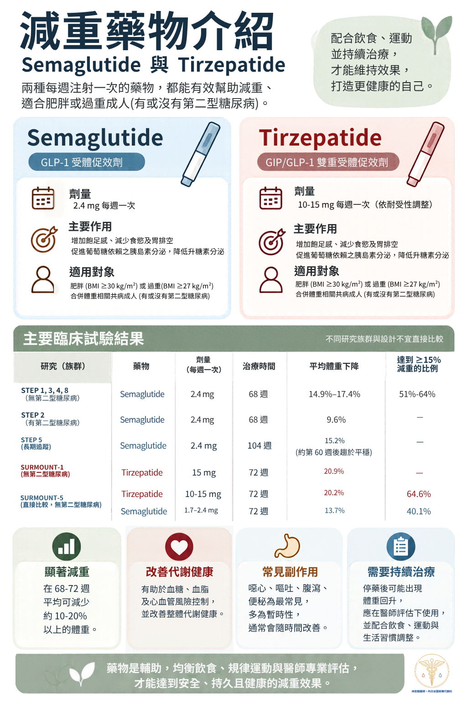

🌿 減重藥物新選擇：Semaglutide 與 Tirzepatide
發布日期：2026/10/18
健康減重，不只是體重數字的改變，更是改善代謝健康、降低慢性疾病風險的重要一步！
近年來，肥胖治療有了更多選擇。其中，Semaglutide（週纖達，Wegovy）與Tirzepatide（猛健樂，Mounjaro）是受到關注的兩種每週一次皮下注射藥物。兩者透過調節食慾、增加飽足感及改善血糖調控，協助符合條件的患者管理體重。

💉 一、兩種藥物的作用有什麼不同？
🔹 Semaglutide（週纖達）
屬於 GLP-1 受體促效劑，可增加飽足感、減少食慾、延緩胃排空，並促進葡萄糖依賴性的胰島素分泌。體重管理常見維持劑量為每週 2.4 mg，並非起始劑量，需依仿單逐步增加。
🔸 Tirzepatide（猛健樂）
屬於 GIP／GLP-1 雙重受體促效劑，可調節食慾、減少食物攝取，並改善血糖調控。通常由每週 2.5 mg 起始，依療效與耐受性逐步調整；體重管理的維持劑量可為每週 5、10 或 15 mg。
👨⚕️ 二、兩種藥物在台灣的核准適應症
🔹 Semaglutide（週纖達，Wegovy）
- 成人體重管理：搭配低熱量飲食及增加身體活動，適用於初始 BMI ≥ 30 kg/m²，或 BMI ≥ 27 且 < 30 kg/m²、合併至少一項體重相關共病者。
- 青少年體重管理：12 歲以上、合併肥胖且體重超過 60 kg，並須依仿單評估治療反應。
- 降低重大心血管不良事件風險：適用於已有心血管疾病且 BMI ≥ 27 kg/m² 的成人。
- 心臟衰竭：適用於符合條件、BMI ≥ 30 kg/m² 的正常收縮分率心衰竭（HFpEF）成人，改善症狀、活動限制並降低心衰竭住院風險。
- 代謝功能異常相關脂肪性肝炎（MASH）：台灣於 2026 年 3 月新增適應症，適用於符合條件、F2–F3 肝纖維化的非肝硬化成人患者。
同成分的 Ozempic（胰妥讚）主要用於第二型糖尿病等核准用途，與 Wegovy 的適應症及使用劑量不同。
🔸 Tirzepatide（猛健樂，Mounjaro）
- 成人第二型糖尿病血糖控制：作為飲食與運動療法之外的輔助治療。
- 成人體重管理：初始 BMI ≥ 30 kg/m²，或 BMI ≥ 27 且 < 30 kg/m²、合併至少一項體重相關共病者。
- 改善阻塞性睡眠呼吸中止症（OSA）嚴重程度：搭配飲食及活動調整，適用於 BMI ≥ 30 kg/m² 且有中度至重度 OSA 的成人。
以上以可查得的台灣藥品資料為依據；實際適應症、禁忌症與使用方式請以 TFDA 最新核准仿單為準。
📊 三、臨床研究：平均可以減少多少體重？
| 臨床研究 | 治療時間 | 平均體重下降 |
|---|---|---|
| Semaglutide：STEP 研究（無第二型糖尿病） | 68 週 | 約 14.9%–17.4% |
| Semaglutide：STEP 2（有第二型糖尿病） | 68 週 | 約 9.6% |
| Semaglutide：STEP 5 | 104 週 | 約 15.2% |
| Tirzepatide 15 mg：SURMOUNT-1 | 72 週 | 約 20.9% |
2025 年 SURMOUNT-5 直接比較研究
針對未罹患第二型糖尿病的肥胖或過重成人，治療 72 週後：
- Semaglutide：平均體重下降 13.7%，約 40.1% 的受試者達到至少 15% 減重。
- Tirzepatide：平均體重下降 20.2%，約 64.6% 的受試者達到至少 15% 減重。
例如原本 80 公斤，減重 15% 相當於減少 12 公斤。上述為試驗平均結果，不代表每位患者都能達到相同幅度；不同研究族群及設計不宜直接比較。
❤️ 四、減重對健康有哪些幫助？
適當減重有助於改善血糖控制、胰島素阻抗、血壓、血脂異常、活動能力及生活品質。部分藥物對特定疾病或心血管事件另有研究證據與核准適應症，但不能推論所有藥物具有完全相同的保護效果。
⚠️ 五、使用減重藥物需要注意什麼？
常見副作用為噁心、嘔吐、腹脹、腹瀉、便秘與腹部不適，常見於開始治療或調整劑量時，部分會逐漸緩解。
若出現持續劇烈腹痛、反覆嘔吐或明顯脫水，應儘速就醫。使用前也須評估胰臟炎、膽囊疾病、腎功能及其他病史；與胰島素或磺醯脲類藥物合用時，需留意低血糖。
有個人或家族甲狀腺髓質癌（MTC）病史、第二型多發性內分泌腫瘤症候群（MEN2）等情形，應依藥品禁忌症避免使用。懷孕或計畫懷孕者須先與醫師討論。不建議自行購買、施打或調整劑量。
🌱 六、減重成功後，可以停藥嗎？
肥胖是需要長期管理的慢性疾病。持續治療有助於維持減重成果，但停藥後部分患者可能食慾增加、體重回升。是否持續、調整或停止用藥，應與醫師共同決策，並持續追蹤體重與代謝健康。
🌿 健康減重的三大關鍵
均衡飲食 × 規律運動 × 醫療專業評估
減重藥物是協助體重管理的工具，真正的目標不只是減少體重，更是改善健康、預防疾病，建立能長期維持的生活習慣。
讓減重成為健康的開始，而不只是短暫的數字變化。
📚 參考文獻與資料
- Bergmann NC, et al. Diabetes Obes Metab. 2023;25:18–35. DOI: 10.1111/dom.14863.
- Garvey WT, et al. Nat Med. 2022;28:2083–2091. DOI: 10.1038/s41591-022-02026-4.
- Aronne LJ, et al. N Engl J Med. 2025;393:26–36. DOI: 10.1056/NEJMoa2416394.
- Rodriguez PJ, et al. JAMA Intern Med. 2024;184:1056–1064. DOI: 10.1001/jamainternmed.2024.2525.
- 週纖達（Wegovy）：衛生福利部食品藥物管理署（TFDA）藥品仿單查詢平台（請以品名查詢最新核准仿單）
- 猛健樂（Mounjaro）：衛生福利部食品藥物管理署（TFDA）藥品仿單查詢平台（請以品名查詢最新核准仿單）
- 週纖達 MASH 新增適應症公告（2026）
本文僅供一般衛教參考，實際用藥應由醫師評估，並以台灣 TFDA 最新核准仿單為準。